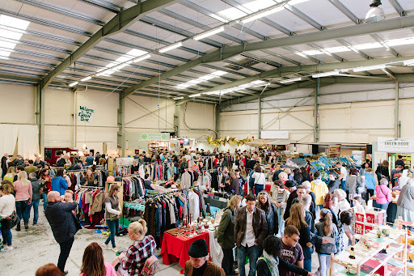
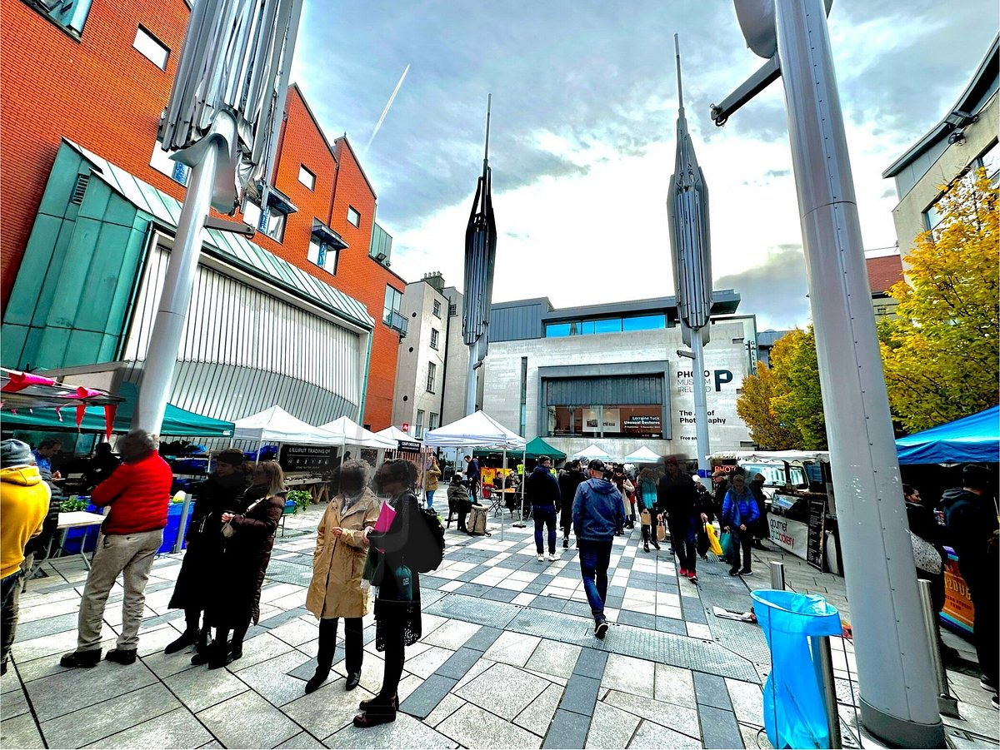

Fresh, Local & Lively
The many markets of Dublin are a sensory experience of Irish food, artists, and culture. Whether you're looking for organic vegetables, handcrafted home goods, antiquities, or delicious samples from world-renowned food trucks, search no further. Every corner of Dublin's market scene will satisfy what you're looking for. Get involved with the city's markets dedicated to sustainability, community, and enterprise in this vibrant city with options for both casual travelers and intense foodies.
You can also take your travels to the Dublin Flea Market, which has vintage clothing, second-hand books, vinyl, and artisanal crafts. A super nice place for tourists and locals. Temple Bar Food Market is a more touristy location; however, every Saturday at Meeting House Square boasts fresh-baked bread, organic meats, cheese, and gourmet take-away food. If you're there for an extended experience, maybe try the The Green Door Market on the outskirts in Dublin 8 (it used to be Newmarket), which brought farm-to-table to the Liberties for over a decade; however, it has closed its doors at its Newmarket location. The farm-fresh experience blossomed in Dublin and now exists with pop-up markets all over the city. If you're looking for an even more localized feel, you can head northwest to the Dublin Flea Market for second-hand clothes and knickknacks or southeast to Temple Bar Food Market for specialty foods and prepared delicacies. You can remain more central, however, and check out George's Street Arcade, home to one of the oldest city markets in all of Europe where you can find eclectic clothing boutiques, coffee shops, craft stalls, and so much more under a beautiful Victorian roof.
